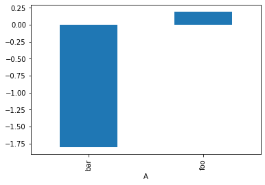
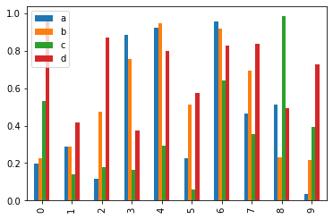
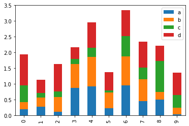
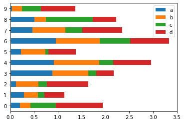

Using pandas
Contents
Using pandas#
import pandas as pd
import numpy as np # for generating random numbers
Series#
# series
s1 = pd.Series([10, 11, 12], dtype = float)
s1
0 10.0
1 11.0
2 12.0
dtype: float64
s2 = pd.Series([10, 11, 12], dtype = int)
s2
0 10
1 11
2 12
dtype: int64
s3 = pd.Series(["10", "11", "12"], name = 'Val', index = pd.Index(['a', 'b', 'c'], name = 'label'))
s3
label
a 10
b 11
c 12
Name: Val, dtype: object
s1.index
RangeIndex(start=0, stop=3, step=1)
# s1.append(s2)
s4 = pd.concat([s1, s3])
s4
0 10.0
1 11.0
2 12.0
a 10
b 11
c 12
dtype: object
print(s4[0])
print(s4)
s4_reset = s4.reset_index(drop=True)
print(s4_reset)
s4_reset[0]
10.0
0 10.0
1 11.0
2 12.0
a 10
b 11
c 12
dtype: object
0 10.0
1 11.0
2 12.0
3 10
4 11
5 12
dtype: object
10.0
dates = pd.date_range('20190503', periods=7)
dates
DatetimeIndex(['2019-05-03', '2019-05-04', '2019-05-05', '2019-05-06',
'2019-05-07', '2019-05-08', '2019-05-09'],
dtype='datetime64[ns]', freq='D')
DataFrame#
df = pd.DataFrame(np.random.randn(7, 4), index=dates, columns=list('ABCD'))
df
| A | B | C | D | |
|---|---|---|---|---|
| 2019-05-03 | 0.847545 | 0.915093 | 0.033650 | 1.923313 |
| 2019-05-04 | -1.631808 | -0.536131 | -2.219775 | 1.870846 |
| 2019-05-05 | 0.448645 | -0.838115 | 0.794117 | -1.774587 |
| 2019-05-06 | 0.116322 | 1.277304 | 0.811389 | -0.509015 |
| 2019-05-07 | -0.663707 | -0.687972 | -0.044218 | -0.568074 |
| 2019-05-08 | 0.376146 | 0.365235 | -0.452303 | 0.501257 |
| 2019-05-09 | -0.236797 | 0.615848 | 0.151258 | 0.185823 |
df2 = pd.DataFrame({'A': 1.,
'B': pd.Timestamp('20130102'),
'C': pd.Series(1, index=list(range(2, 6)), dtype='float32'),
'D': np.array([3] * 4, dtype='int32'),
'E': pd.Categorical(["test", "train", "test", "train"]),
'F': 'foo'})
df2
| A | B | C | D | E | F | |
|---|---|---|---|---|---|---|
| 2 | 1.0 | 2013-01-02 | 1.0 | 3 | test | foo |
| 3 | 1.0 | 2013-01-02 | 1.0 | 3 | train | foo |
| 4 | 1.0 | 2013-01-02 | 1.0 | 3 | test | foo |
| 5 | 1.0 | 2013-01-02 | 1.0 | 3 | train | foo |
df2.dtypes
A float64
B datetime64[ns]
C float32
D int32
E category
F object
dtype: object
df = pd.read_csv('heart.csv')
df
| Unnamed: 0 | Age | Sex | ChestPain | RestBP | Chol | Fbs | RestECG | MaxHR | ExAng | Oldpeak | Slope | Ca | Thal | AHD | |
|---|---|---|---|---|---|---|---|---|---|---|---|---|---|---|---|
| 0 | 1 | 63 | 1 | typical | 145 | 233 | 1 | 2 | 150 | 0 | 2.3 | 3 | 0.0 | fixed | No |
| 1 | 2 | 67 | 1 | asymptomatic | 160 | 286 | 0 | 2 | 108 | 1 | 1.5 | 2 | 3.0 | normal | Yes |
| 2 | 3 | 67 | 1 | asymptomatic | 120 | 229 | 0 | 2 | 129 | 1 | 2.6 | 2 | 2.0 | reversable | Yes |
| 3 | 4 | 37 | 1 | nonanginal | 130 | 250 | 0 | 0 | 187 | 0 | 3.5 | 3 | 0.0 | normal | No |
| 4 | 5 | 41 | 0 | nontypical | 130 | 204 | 0 | 2 | 172 | 0 | 1.4 | 1 | 0.0 | normal | No |
| ... | ... | ... | ... | ... | ... | ... | ... | ... | ... | ... | ... | ... | ... | ... | ... |
| 298 | 299 | 45 | 1 | typical | 110 | 264 | 0 | 0 | 132 | 0 | 1.2 | 2 | 0.0 | reversable | Yes |
| 299 | 300 | 68 | 1 | asymptomatic | 144 | 193 | 1 | 0 | 141 | 0 | 3.4 | 2 | 2.0 | reversable | Yes |
| 300 | 301 | 57 | 1 | asymptomatic | 130 | 131 | 0 | 0 | 115 | 1 | 1.2 | 2 | 1.0 | reversable | Yes |
| 301 | 302 | 57 | 0 | nontypical | 130 | 236 | 0 | 2 | 174 | 0 | 0.0 | 2 | 1.0 | normal | Yes |
| 302 | 303 | 38 | 1 | nonanginal | 138 | 175 | 0 | 0 | 173 | 0 | 0.0 | 1 | NaN | normal | No |
303 rows × 15 columns
Viewing Data#
df.head(10)
| Unnamed: 0 | Age | Sex | ChestPain | RestBP | Chol | Fbs | RestECG | MaxHR | ExAng | Oldpeak | Slope | Ca | Thal | AHD | |
|---|---|---|---|---|---|---|---|---|---|---|---|---|---|---|---|
| 0 | 1 | 63 | 1 | typical | 145 | 233 | 1 | 2 | 150 | 0 | 2.3 | 3 | 0.0 | fixed | No |
| 1 | 2 | 67 | 1 | asymptomatic | 160 | 286 | 0 | 2 | 108 | 1 | 1.5 | 2 | 3.0 | normal | Yes |
| 2 | 3 | 67 | 1 | asymptomatic | 120 | 229 | 0 | 2 | 129 | 1 | 2.6 | 2 | 2.0 | reversable | Yes |
| 3 | 4 | 37 | 1 | nonanginal | 130 | 250 | 0 | 0 | 187 | 0 | 3.5 | 3 | 0.0 | normal | No |
| 4 | 5 | 41 | 0 | nontypical | 130 | 204 | 0 | 2 | 172 | 0 | 1.4 | 1 | 0.0 | normal | No |
| 5 | 6 | 56 | 1 | nontypical | 120 | 236 | 0 | 0 | 178 | 0 | 0.8 | 1 | 0.0 | normal | No |
| 6 | 7 | 62 | 0 | asymptomatic | 140 | 268 | 0 | 2 | 160 | 0 | 3.6 | 3 | 2.0 | normal | Yes |
| 7 | 8 | 57 | 0 | asymptomatic | 120 | 354 | 0 | 0 | 163 | 1 | 0.6 | 1 | 0.0 | normal | No |
| 8 | 9 | 63 | 1 | asymptomatic | 130 | 254 | 0 | 2 | 147 | 0 | 1.4 | 2 | 1.0 | reversable | Yes |
| 9 | 10 | 53 | 1 | asymptomatic | 140 | 203 | 1 | 2 | 155 | 1 | 3.1 | 3 | 0.0 | reversable | Yes |
df.tail(8)
| Unnamed: 0 | Age | Sex | ChestPain | RestBP | Chol | Fbs | RestECG | MaxHR | ExAng | Oldpeak | Slope | Ca | Thal | AHD | |
|---|---|---|---|---|---|---|---|---|---|---|---|---|---|---|---|
| 295 | 296 | 41 | 1 | nontypical | 120 | 157 | 0 | 0 | 182 | 0 | 0.0 | 1 | 0.0 | normal | No |
| 296 | 297 | 59 | 1 | asymptomatic | 164 | 176 | 1 | 2 | 90 | 0 | 1.0 | 2 | 2.0 | fixed | Yes |
| 297 | 298 | 57 | 0 | asymptomatic | 140 | 241 | 0 | 0 | 123 | 1 | 0.2 | 2 | 0.0 | reversable | Yes |
| 298 | 299 | 45 | 1 | typical | 110 | 264 | 0 | 0 | 132 | 0 | 1.2 | 2 | 0.0 | reversable | Yes |
| 299 | 300 | 68 | 1 | asymptomatic | 144 | 193 | 1 | 0 | 141 | 0 | 3.4 | 2 | 2.0 | reversable | Yes |
| 300 | 301 | 57 | 1 | asymptomatic | 130 | 131 | 0 | 0 | 115 | 1 | 1.2 | 2 | 1.0 | reversable | Yes |
| 301 | 302 | 57 | 0 | nontypical | 130 | 236 | 0 | 2 | 174 | 0 | 0.0 | 2 | 1.0 | normal | Yes |
| 302 | 303 | 38 | 1 | nonanginal | 138 | 175 | 0 | 0 | 173 | 0 | 0.0 | 1 | NaN | normal | No |
df.describe()
| Unnamed: 0 | Age | Sex | RestBP | Chol | Fbs | RestECG | MaxHR | ExAng | Oldpeak | Slope | Ca | |
|---|---|---|---|---|---|---|---|---|---|---|---|---|
| count | 303.000000 | 303.000000 | 303.000000 | 303.000000 | 303.000000 | 303.000000 | 303.000000 | 303.000000 | 303.000000 | 303.000000 | 303.000000 | 299.000000 |
| mean | 152.000000 | 54.438944 | 0.679868 | 131.689769 | 246.693069 | 0.148515 | 0.990099 | 149.607261 | 0.326733 | 1.039604 | 1.600660 | 0.672241 |
| std | 87.612784 | 9.038662 | 0.467299 | 17.599748 | 51.776918 | 0.356198 | 0.994971 | 22.875003 | 0.469794 | 1.161075 | 0.616226 | 0.937438 |
| min | 1.000000 | 29.000000 | 0.000000 | 94.000000 | 126.000000 | 0.000000 | 0.000000 | 71.000000 | 0.000000 | 0.000000 | 1.000000 | 0.000000 |
| 25% | 76.500000 | 48.000000 | 0.000000 | 120.000000 | 211.000000 | 0.000000 | 0.000000 | 133.500000 | 0.000000 | 0.000000 | 1.000000 | 0.000000 |
| 50% | 152.000000 | 56.000000 | 1.000000 | 130.000000 | 241.000000 | 0.000000 | 1.000000 | 153.000000 | 0.000000 | 0.800000 | 2.000000 | 0.000000 |
| 75% | 227.500000 | 61.000000 | 1.000000 | 140.000000 | 275.000000 | 0.000000 | 2.000000 | 166.000000 | 1.000000 | 1.600000 | 2.000000 | 1.000000 |
| max | 303.000000 | 77.000000 | 1.000000 | 200.000000 | 564.000000 | 1.000000 | 2.000000 | 202.000000 | 1.000000 | 6.200000 | 3.000000 | 3.000000 |
df.index
RangeIndex(start=0, stop=303, step=1)
df.columns
Index(['Unnamed: 0', 'Age', 'Sex', 'ChestPain', 'RestBP', 'Chol', 'Fbs',
'RestECG', 'MaxHR', 'ExAng', 'Oldpeak', 'Slope', 'Ca', 'Thal', 'AHD'],
dtype='object')
# df.sort_index(axis=0, ascending=True)
# df.sort_index(axis=0, ascending=False)
df.sort_index(axis=1, ascending=True)
df.sort_index(axis=1, ascending=False)
| Unnamed: 0 | Thal | Slope | Sex | RestECG | RestBP | Oldpeak | MaxHR | Fbs | ExAng | Chol | ChestPain | Ca | Age | AHD | |
|---|---|---|---|---|---|---|---|---|---|---|---|---|---|---|---|
| 0 | 1 | fixed | 3 | 1 | 2 | 145 | 2.3 | 150 | 1 | 0 | 233 | typical | 0.0 | 63 | No |
| 1 | 2 | normal | 2 | 1 | 2 | 160 | 1.5 | 108 | 0 | 1 | 286 | asymptomatic | 3.0 | 67 | Yes |
| 2 | 3 | reversable | 2 | 1 | 2 | 120 | 2.6 | 129 | 0 | 1 | 229 | asymptomatic | 2.0 | 67 | Yes |
| 3 | 4 | normal | 3 | 1 | 0 | 130 | 3.5 | 187 | 0 | 0 | 250 | nonanginal | 0.0 | 37 | No |
| 4 | 5 | normal | 1 | 0 | 2 | 130 | 1.4 | 172 | 0 | 0 | 204 | nontypical | 0.0 | 41 | No |
| ... | ... | ... | ... | ... | ... | ... | ... | ... | ... | ... | ... | ... | ... | ... | ... |
| 298 | 299 | reversable | 2 | 1 | 0 | 110 | 1.2 | 132 | 0 | 0 | 264 | typical | 0.0 | 45 | Yes |
| 299 | 300 | reversable | 2 | 1 | 0 | 144 | 3.4 | 141 | 1 | 0 | 193 | asymptomatic | 2.0 | 68 | Yes |
| 300 | 301 | reversable | 2 | 1 | 0 | 130 | 1.2 | 115 | 0 | 1 | 131 | asymptomatic | 1.0 | 57 | Yes |
| 301 | 302 | normal | 2 | 0 | 2 | 130 | 0.0 | 174 | 0 | 0 | 236 | nontypical | 1.0 | 57 | Yes |
| 302 | 303 | normal | 1 | 1 | 0 | 138 | 0.0 | 173 | 0 | 0 | 175 | nonanginal | NaN | 38 | No |
303 rows × 15 columns
df.sort_values(by = 'Sex', ascending = False)
| Unnamed: 0 | Age | Sex | ChestPain | RestBP | Chol | Fbs | RestECG | MaxHR | ExAng | Oldpeak | Slope | Ca | Thal | AHD | |
|---|---|---|---|---|---|---|---|---|---|---|---|---|---|---|---|
| 0 | 1 | 63 | 1 | typical | 145 | 233 | 1 | 2 | 150 | 0 | 2.3 | 3 | 0.0 | fixed | No |
| 205 | 206 | 45 | 1 | asymptomatic | 142 | 309 | 0 | 2 | 147 | 1 | 0.0 | 2 | 3.0 | reversable | Yes |
| 161 | 162 | 77 | 1 | asymptomatic | 125 | 304 | 0 | 2 | 162 | 1 | 0.0 | 1 | 3.0 | normal | Yes |
| 164 | 165 | 48 | 1 | nonanginal | 124 | 255 | 1 | 0 | 175 | 0 | 0.0 | 1 | 2.0 | normal | No |
| 165 | 166 | 57 | 1 | asymptomatic | 132 | 207 | 0 | 0 | 168 | 1 | 0.0 | 1 | 0.0 | reversable | No |
| ... | ... | ... | ... | ... | ... | ... | ... | ... | ... | ... | ... | ... | ... | ... | ... |
| 197 | 198 | 45 | 0 | asymptomatic | 138 | 236 | 0 | 2 | 152 | 1 | 0.2 | 2 | 0.0 | normal | No |
| 194 | 195 | 68 | 0 | nonanginal | 120 | 211 | 0 | 2 | 115 | 0 | 1.5 | 2 | 0.0 | normal | No |
| 193 | 194 | 62 | 0 | asymptomatic | 138 | 294 | 1 | 0 | 106 | 0 | 1.9 | 2 | 3.0 | normal | Yes |
| 70 | 71 | 65 | 0 | nonanginal | 155 | 269 | 0 | 0 | 148 | 0 | 0.8 | 1 | 0.0 | normal | No |
| 151 | 152 | 42 | 0 | asymptomatic | 102 | 265 | 0 | 2 | 122 | 0 | 0.6 | 2 | 0.0 | normal | No |
303 rows × 15 columns
df.T
| 0 | 1 | 2 | 3 | 4 | 5 | 6 | 7 | 8 | 9 | ... | 293 | 294 | 295 | 296 | 297 | 298 | 299 | 300 | 301 | 302 | |
|---|---|---|---|---|---|---|---|---|---|---|---|---|---|---|---|---|---|---|---|---|---|
| Unnamed: 0 | 1 | 2 | 3 | 4 | 5 | 6 | 7 | 8 | 9 | 10 | ... | 294 | 295 | 296 | 297 | 298 | 299 | 300 | 301 | 302 | 303 |
| Age | 63 | 67 | 67 | 37 | 41 | 56 | 62 | 57 | 63 | 53 | ... | 63 | 63 | 41 | 59 | 57 | 45 | 68 | 57 | 57 | 38 |
| Sex | 1 | 1 | 1 | 1 | 0 | 1 | 0 | 0 | 1 | 1 | ... | 1 | 0 | 1 | 1 | 0 | 1 | 1 | 1 | 0 | 1 |
| ChestPain | typical | asymptomatic | asymptomatic | nonanginal | nontypical | nontypical | asymptomatic | asymptomatic | asymptomatic | asymptomatic | ... | asymptomatic | asymptomatic | nontypical | asymptomatic | asymptomatic | typical | asymptomatic | asymptomatic | nontypical | nonanginal |
| RestBP | 145 | 160 | 120 | 130 | 130 | 120 | 140 | 120 | 130 | 140 | ... | 140 | 124 | 120 | 164 | 140 | 110 | 144 | 130 | 130 | 138 |
| Chol | 233 | 286 | 229 | 250 | 204 | 236 | 268 | 354 | 254 | 203 | ... | 187 | 197 | 157 | 176 | 241 | 264 | 193 | 131 | 236 | 175 |
| Fbs | 1 | 0 | 0 | 0 | 0 | 0 | 0 | 0 | 0 | 1 | ... | 0 | 0 | 0 | 1 | 0 | 0 | 1 | 0 | 0 | 0 |
| RestECG | 2 | 2 | 2 | 0 | 2 | 0 | 2 | 0 | 2 | 2 | ... | 2 | 0 | 0 | 2 | 0 | 0 | 0 | 0 | 2 | 0 |
| MaxHR | 150 | 108 | 129 | 187 | 172 | 178 | 160 | 163 | 147 | 155 | ... | 144 | 136 | 182 | 90 | 123 | 132 | 141 | 115 | 174 | 173 |
| ExAng | 0 | 1 | 1 | 0 | 0 | 0 | 0 | 1 | 0 | 1 | ... | 1 | 1 | 0 | 0 | 1 | 0 | 0 | 1 | 0 | 0 |
| Oldpeak | 2.3 | 1.5 | 2.6 | 3.5 | 1.4 | 0.8 | 3.6 | 0.6 | 1.4 | 3.1 | ... | 4.0 | 0.0 | 0.0 | 1.0 | 0.2 | 1.2 | 3.4 | 1.2 | 0.0 | 0.0 |
| Slope | 3 | 2 | 2 | 3 | 1 | 1 | 3 | 1 | 2 | 3 | ... | 1 | 2 | 1 | 2 | 2 | 2 | 2 | 2 | 2 | 1 |
| Ca | 0.0 | 3.0 | 2.0 | 0.0 | 0.0 | 0.0 | 2.0 | 0.0 | 1.0 | 0.0 | ... | 2.0 | 0.0 | 0.0 | 2.0 | 0.0 | 0.0 | 2.0 | 1.0 | 1.0 | NaN |
| Thal | fixed | normal | reversable | normal | normal | normal | normal | normal | reversable | reversable | ... | reversable | normal | normal | fixed | reversable | reversable | reversable | reversable | normal | normal |
| AHD | No | Yes | Yes | No | No | No | Yes | No | Yes | Yes | ... | Yes | Yes | No | Yes | Yes | Yes | Yes | Yes | Yes | No |
15 rows × 303 columns
df['Age']
0 63
1 67
2 67
3 37
4 41
..
298 45
299 68
300 57
301 57
302 38
Name: Age, Length: 303, dtype: int64
df[['Age', 'Sex']]
| Age | Sex | |
|---|---|---|
| 0 | 63 | 1 |
| 1 | 67 | 1 |
| 2 | 67 | 1 |
| 3 | 37 | 1 |
| 4 | 41 | 0 |
| ... | ... | ... |
| 298 | 45 | 1 |
| 299 | 68 | 1 |
| 300 | 57 | 1 |
| 301 | 57 | 0 |
| 302 | 38 | 1 |
303 rows × 2 columns
df[['Age', 'Sex']][0:2]
| Age | Sex | |
|---|---|---|
| 0 | 63 | 1 |
| 1 | 67 | 1 |
df[0:2][['Age']]
| Age | |
|---|---|
| 0 | 63 |
| 1 | 67 |
Data Selection#
df.loc[4]
# df
Unnamed: 0 5
Age 41
Sex 0
ChestPain nontypical
RestBP 130
Chol 204
Fbs 0
RestECG 2
MaxHR 172
ExAng 0
Oldpeak 1.4
Slope 1
Ca 0.0
Thal normal
AHD No
Name: 4, dtype: object
df.loc[[3,5], ['Age', 'Fbs']]
| Age | Fbs | |
|---|---|---|
| 3 | 37 | 0 |
| 5 | 56 | 0 |
df.iloc[5]
Unnamed: 0 6
Age 56
Sex 1
ChestPain nontypical
RestBP 120
Chol 236
Fbs 0
RestECG 0
MaxHR 178
ExAng 0
Oldpeak 0.8
Slope 1
Ca 0.0
Thal normal
AHD No
Name: 5, dtype: object
df.iloc[5, 3]
'nontypical'
# df.iloc[5:7, 3:7]
# df.iloc[[5, 7, 9], 3:7]
# df.iloc[:, 3]
df.iloc[3: 5, :]
# df.loc[5:7, 3:7]
| Unnamed: 0 | Age | Sex | ChestPain | RestBP | Chol | Fbs | RestECG | MaxHR | ExAng | Oldpeak | Slope | Ca | Thal | AHD | |
|---|---|---|---|---|---|---|---|---|---|---|---|---|---|---|---|
| 3 | 4 | 37 | 1 | nonanginal | 130 | 250 | 0 | 0 | 187 | 0 | 3.5 | 3 | 0.0 | normal | No |
| 4 | 5 | 41 | 0 | nontypical | 130 | 204 | 0 | 2 | 172 | 0 | 1.4 | 1 | 0.0 | normal | No |
df.iloc[1, 1]
df.at[1, 'Age'] # Get scalar values. It's a very fast loc
df.iat[1, 1] # Get scalar values. It's a very fast iloc
67
df['Age'] > 50
0 True
1 True
2 True
3 False
4 False
...
298 False
299 True
300 True
301 True
302 False
Name: Age, Length: 303, dtype: bool
df[df.Age > 50]
| Unnamed: 0 | Age | Sex | ChestPain | RestBP | Chol | Fbs | RestECG | MaxHR | ExAng | Oldpeak | Slope | Ca | Thal | AHD | |
|---|---|---|---|---|---|---|---|---|---|---|---|---|---|---|---|
| 0 | 1 | 63 | 1 | typical | 145 | 233 | 1 | 2 | 150 | 0 | 2.3 | 3 | 0.0 | fixed | No |
| 1 | 2 | 67 | 1 | asymptomatic | 160 | 286 | 0 | 2 | 108 | 1 | 1.5 | 2 | 3.0 | normal | Yes |
| 2 | 3 | 67 | 1 | asymptomatic | 120 | 229 | 0 | 2 | 129 | 1 | 2.6 | 2 | 2.0 | reversable | Yes |
| 5 | 6 | 56 | 1 | nontypical | 120 | 236 | 0 | 0 | 178 | 0 | 0.8 | 1 | 0.0 | normal | No |
| 6 | 7 | 62 | 0 | asymptomatic | 140 | 268 | 0 | 2 | 160 | 0 | 3.6 | 3 | 2.0 | normal | Yes |
| ... | ... | ... | ... | ... | ... | ... | ... | ... | ... | ... | ... | ... | ... | ... | ... |
| 296 | 297 | 59 | 1 | asymptomatic | 164 | 176 | 1 | 2 | 90 | 0 | 1.0 | 2 | 2.0 | fixed | Yes |
| 297 | 298 | 57 | 0 | asymptomatic | 140 | 241 | 0 | 0 | 123 | 1 | 0.2 | 2 | 0.0 | reversable | Yes |
| 299 | 300 | 68 | 1 | asymptomatic | 144 | 193 | 1 | 0 | 141 | 0 | 3.4 | 2 | 2.0 | reversable | Yes |
| 300 | 301 | 57 | 1 | asymptomatic | 130 | 131 | 0 | 0 | 115 | 1 | 1.2 | 2 | 1.0 | reversable | Yes |
| 301 | 302 | 57 | 0 | nontypical | 130 | 236 | 0 | 2 | 174 | 0 | 0.0 | 2 | 1.0 | normal | Yes |
209 rows × 15 columns
df2 = df.copy()
df2 = df2.iloc[0: 5, :]
df2
| Unnamed: 0 | Age | Sex | ChestPain | RestBP | Chol | Fbs | RestECG | MaxHR | ExAng | Oldpeak | Slope | Ca | Thal | AHD | |
|---|---|---|---|---|---|---|---|---|---|---|---|---|---|---|---|
| 0 | 1 | 63 | 1 | typical | 145 | 233 | 1 | 2 | 150 | 0 | 2.3 | 3 | 0.0 | fixed | No |
| 1 | 2 | 67 | 1 | asymptomatic | 160 | 286 | 0 | 2 | 108 | 1 | 1.5 | 2 | 3.0 | normal | Yes |
| 2 | 3 | 67 | 1 | asymptomatic | 120 | 229 | 0 | 2 | 129 | 1 | 2.6 | 2 | 2.0 | reversable | Yes |
| 3 | 4 | 37 | 1 | nonanginal | 130 | 250 | 0 | 0 | 187 | 0 | 3.5 | 3 | 0.0 | normal | No |
| 4 | 5 | 41 | 0 | nontypical | 130 | 204 | 0 | 2 | 172 | 0 | 1.4 | 1 | 0.0 | normal | No |
# dfa['A'] = list(range(len(dfa.index))) # use this form to create a new column
df2['cp'] = ['three', 'two', 'one', 'one', 'zero']
df2
df2.cp.isin(['one', 'zero'])
0 False
1 False
2 True
3 True
4 True
Name: cp, dtype: bool
df2[df2.cp.isin(['one', 'zero'])]
| Unnamed: 0 | Age | Sex | ChestPain | RestBP | Chol | Fbs | RestECG | MaxHR | ExAng | Oldpeak | Slope | Ca | Thal | AHD | cp | |
|---|---|---|---|---|---|---|---|---|---|---|---|---|---|---|---|---|
| 2 | 3 | 67 | 1 | asymptomatic | 120 | 229 | 0 | 2 | 129 | 1 | 2.6 | 2 | 2.0 | reversable | Yes | one |
| 3 | 4 | 37 | 1 | nonanginal | 130 | 250 | 0 | 0 | 187 | 0 | 3.5 | 3 | 0.0 | normal | No | one |
| 4 | 5 | 41 | 0 | nontypical | 130 | 204 | 0 | 2 | 172 | 0 | 1.4 | 1 | 0.0 | normal | No | zero |
Missing Data#
df1 = df.reindex(index=range(0, 4), columns=list(df.columns) + ['E'])
df1.loc[2:3, 'E'] = 1
df1
| Unnamed: 0 | Age | Sex | ChestPain | RestBP | Chol | Fbs | RestECG | MaxHR | ExAng | Oldpeak | Slope | Ca | Thal | AHD | E | |
|---|---|---|---|---|---|---|---|---|---|---|---|---|---|---|---|---|
| 0 | 1 | 63 | 1 | typical | 145 | 233 | 1 | 2 | 150 | 0 | 2.3 | 3 | 0.0 | fixed | No | NaN |
| 1 | 2 | 67 | 1 | asymptomatic | 160 | 286 | 0 | 2 | 108 | 1 | 1.5 | 2 | 3.0 | normal | Yes | NaN |
| 2 | 3 | 67 | 1 | asymptomatic | 120 | 229 | 0 | 2 | 129 | 1 | 2.6 | 2 | 2.0 | reversable | Yes | 1.0 |
| 3 | 4 | 37 | 1 | nonanginal | 130 | 250 | 0 | 0 | 187 | 0 | 3.5 | 3 | 0.0 | normal | No | 1.0 |
df1.dropna(how='any')
| Unnamed: 0 | Age | Sex | ChestPain | RestBP | Chol | Fbs | RestECG | MaxHR | ExAng | Oldpeak | Slope | Ca | Thal | AHD | E | |
|---|---|---|---|---|---|---|---|---|---|---|---|---|---|---|---|---|
| 2 | 3 | 67 | 1 | asymptomatic | 120 | 229 | 0 | 2 | 129 | 1 | 2.6 | 2 | 2.0 | reversable | Yes | 1.0 |
| 3 | 4 | 37 | 1 | nonanginal | 130 | 250 | 0 | 0 | 187 | 0 | 3.5 | 3 | 0.0 | normal | No | 1.0 |
pd.isna(df1)
| Unnamed: 0 | Age | Sex | ChestPain | RestBP | Chol | Fbs | RestECG | MaxHR | ExAng | Oldpeak | Slope | Ca | Thal | AHD | E | |
|---|---|---|---|---|---|---|---|---|---|---|---|---|---|---|---|---|
| 0 | False | False | False | False | False | False | False | False | False | False | False | False | False | False | False | True |
| 1 | False | False | False | False | False | False | False | False | False | False | False | False | False | False | False | True |
| 2 | False | False | False | False | False | False | False | False | False | False | False | False | False | False | False | False |
| 3 | False | False | False | False | False | False | False | False | False | False | False | False | False | False | False | False |
df1.fillna(value=2)
| Unnamed: 0 | Age | Sex | ChestPain | RestBP | Chol | Fbs | RestECG | MaxHR | ExAng | Oldpeak | Slope | Ca | Thal | AHD | E | |
|---|---|---|---|---|---|---|---|---|---|---|---|---|---|---|---|---|
| 0 | 1 | 63 | 1 | typical | 145 | 233 | 1 | 2 | 150 | 0 | 2.3 | 3 | 0.0 | fixed | No | 2.0 |
| 1 | 2 | 67 | 1 | asymptomatic | 160 | 286 | 0 | 2 | 108 | 1 | 1.5 | 2 | 3.0 | normal | Yes | 2.0 |
| 2 | 3 | 67 | 1 | asymptomatic | 120 | 229 | 0 | 2 | 129 | 1 | 2.6 | 2 | 2.0 | reversable | Yes | 1.0 |
| 3 | 4 | 37 | 1 | nonanginal | 130 | 250 | 0 | 0 | 187 | 0 | 3.5 | 3 | 0.0 | normal | No | 1.0 |
Operations#
df1.mean()
/tmp/ipykernel_386/2053335143.py:1: FutureWarning: Dropping of nuisance columns in DataFrame reductions (with 'numeric_only=None') is deprecated; in a future version this will raise TypeError. Select only valid columns before calling the reduction.
df1.mean()
Unnamed: 0 2.500
Age 58.500
Sex 1.000
RestBP 138.750
Chol 249.500
Fbs 0.250
RestECG 1.500
MaxHR 143.500
ExAng 0.500
Oldpeak 2.475
Slope 2.500
Ca 1.250
E 1.000
dtype: float64
df1.mean(axis = 1)
/tmp/ipykernel_386/3704246674.py:1: FutureWarning: Dropping of nuisance columns in DataFrame reductions (with 'numeric_only=None') is deprecated; in a future version this will raise TypeError. Select only valid columns before calling the reduction.
df1.mean(axis = 1)
0 50.108333
1 52.791667
2 43.046154
3 47.423077
dtype: float64
# df1.sub([10 for _ in range(4)], axis = 'index')
df1.mul([10 for _ in range(4)], axis = 'index')
| Unnamed: 0 | Age | Sex | ChestPain | RestBP | Chol | Fbs | RestECG | MaxHR | ExAng | Oldpeak | Slope | Ca | Thal | AHD | E | |
|---|---|---|---|---|---|---|---|---|---|---|---|---|---|---|---|---|
| 0 | 10 | 630 | 10 | typicaltypicaltypicaltypicaltypicaltypicaltypi... | 1450 | 2330 | 10 | 20 | 1500 | 0 | 23.0 | 30 | 0.0 | fixedfixedfixedfixedfixedfixedfixedfixedfixedf... | NoNoNoNoNoNoNoNoNoNo | NaN |
| 1 | 20 | 670 | 10 | asymptomaticasymptomaticasymptomaticasymptomat... | 1600 | 2860 | 0 | 20 | 1080 | 10 | 15.0 | 20 | 30.0 | normalnormalnormalnormalnormalnormalnormalnorm... | YesYesYesYesYesYesYesYesYesYes | NaN |
| 2 | 30 | 670 | 10 | asymptomaticasymptomaticasymptomaticasymptomat... | 1200 | 2290 | 0 | 20 | 1290 | 10 | 26.0 | 20 | 20.0 | reversablereversablereversablereversablerevers... | YesYesYesYesYesYesYesYesYesYes | 10.0 |
| 3 | 40 | 370 | 10 | nonanginalnonanginalnonanginalnonanginalnonang... | 1300 | 2500 | 0 | 0 | 1870 | 0 | 35.0 | 30 | 0.0 | normalnormalnormalnormalnormalnormalnormalnorm... | NoNoNoNoNoNoNoNoNoNo | 10.0 |
df1
| Unnamed: 0 | Age | Sex | ChestPain | RestBP | Chol | Fbs | RestECG | MaxHR | ExAng | Oldpeak | Slope | Ca | Thal | AHD | E | |
|---|---|---|---|---|---|---|---|---|---|---|---|---|---|---|---|---|
| 0 | 1 | 63 | 1 | typical | 145 | 233 | 1 | 2 | 150 | 0 | 2.3 | 3 | 0.0 | fixed | No | NaN |
| 1 | 2 | 67 | 1 | asymptomatic | 160 | 286 | 0 | 2 | 108 | 1 | 1.5 | 2 | 3.0 | normal | Yes | NaN |
| 2 | 3 | 67 | 1 | asymptomatic | 120 | 229 | 0 | 2 | 129 | 1 | 2.6 | 2 | 2.0 | reversable | Yes | 1.0 |
| 3 | 4 | 37 | 1 | nonanginal | 130 | 250 | 0 | 0 | 187 | 0 | 3.5 | 3 | 0.0 | normal | No | 1.0 |
df1.apply(np.cumsum)
| Unnamed: 0 | Age | Sex | ChestPain | RestBP | Chol | Fbs | RestECG | MaxHR | ExAng | Oldpeak | Slope | Ca | Thal | AHD | E | |
|---|---|---|---|---|---|---|---|---|---|---|---|---|---|---|---|---|
| 0 | 1 | 63 | 1 | typical | 145 | 233 | 1 | 2 | 150 | 0 | 2.3 | 3 | 0.0 | fixed | No | NaN |
| 1 | 3 | 130 | 2 | typicalasymptomatic | 305 | 519 | 1 | 4 | 258 | 1 | 3.8 | 5 | 3.0 | fixednormal | NoYes | NaN |
| 2 | 6 | 197 | 3 | typicalasymptomaticasymptomatic | 425 | 748 | 1 | 6 | 387 | 2 | 6.4 | 7 | 5.0 | fixednormalreversable | NoYesYes | 1.0 |
| 3 | 10 | 234 | 4 | typicalasymptomaticasymptomaticnonanginal | 555 | 998 | 1 | 6 | 574 | 2 | 9.9 | 10 | 5.0 | fixednormalreversablenormal | NoYesYesNo | 2.0 |
df1.Age.apply(lambda x: x*365.25)
0 23010.75
1 24471.75
2 24471.75
3 13514.25
Name: Age, dtype: float64
s = pd.Series(np.random.randint(0, 7, size=10))
s
0 1
1 5
2 5
3 4
4 4
5 1
6 0
7 0
8 2
9 6
dtype: int64
s.value_counts()
1 2
5 2
4 2
0 2
2 1
6 1
dtype: int64
s = pd.Series(['A', 'B', 'C', 'Aaba', 'Baca', np.nan, 'CABA', 'dog', 'cat'])
s
s.str.lower()
0 a
1 b
2 c
3 aaba
4 baca
5 NaN
6 caba
7 dog
8 cat
dtype: object
Merge#
df2 = pd.DataFrame(np.random.randn(10, 4))
pieces = [df2[:3], df2[3:7], df2[7:]]
pieces
pd.concat([pieces[2], pieces[1], pieces[0]])
| 0 | 1 | 2 | 3 | |
|---|---|---|---|---|
| 7 | -0.926170 | 0.371581 | -0.274781 | 1.600670 |
| 8 | 0.095076 | -0.259255 | 0.019127 | 2.319404 |
| 9 | -2.217037 | 0.554945 | 0.394274 | 0.411038 |
| 3 | 0.517636 | -0.979004 | -0.593122 | -2.776971 |
| 4 | 1.067396 | 0.355627 | -0.057786 | 0.916282 |
| 5 | 1.933823 | -1.418328 | 1.562763 | -0.646682 |
| 6 | 0.538205 | 2.018779 | -0.492969 | -0.524708 |
| 0 | 0.148719 | -0.547342 | 0.421761 | -0.188742 |
| 1 | 0.167643 | 0.115535 | 0.066695 | -0.541927 |
| 2 | -0.064820 | 0.271814 | -0.887170 | 0.460193 |
left = pd.DataFrame({'key': ['foo', 'foo'], 'lval': [1, 2]})
right = pd.DataFrame({'key': ['foo', 'foo'], 'rval': [4, 5]})
left
| key | lval | |
|---|---|---|
| 0 | foo | 1 |
| 1 | foo | 2 |
right
| key | rval | |
|---|---|---|
| 0 | foo | 4 |
| 1 | foo | 5 |
pd.merge(left, right, on='key')
| key | lval | rval | |
|---|---|---|---|
| 0 | foo | 1 | 4 |
| 1 | foo | 1 | 5 |
| 2 | foo | 2 | 4 |
| 3 | foo | 2 | 5 |
left = pd.DataFrame({'key': ['foo', 'bar'], 'lval': [1, 2]})
right = pd.DataFrame({'key': ['foo', 'bar'], 'rval': [4, 5]})
pd.merge(left, right, on='key')
| key | lval | rval | |
|---|---|---|---|
| 0 | foo | 1 | 4 |
| 1 | bar | 2 | 5 |
left
| key | lval | |
|---|---|---|
| 0 | foo | 1 |
| 1 | bar | 2 |
right
| key | rval | |
|---|---|---|
| 0 | foo | 4 |
| 1 | bar | 5 |
df = pd.DataFrame(np.random.randn(8, 4), columns=['A', 'B', 'C', 'D'])
# df.append(df.iloc[3])
df.append(df.iloc[3], ignore_index = True)
/tmp/ipykernel_386/2883249601.py:3: FutureWarning: The frame.append method is deprecated and will be removed from pandas in a future version. Use pandas.concat instead.
df.append(df.iloc[3], ignore_index = True)
| A | B | C | D | |
|---|---|---|---|---|
| 0 | 0.386308 | 1.302810 | 1.922146 | -0.390202 |
| 1 | 0.829842 | 0.123273 | -0.377999 | -0.907610 |
| 2 | 0.747274 | -0.069862 | 0.084427 | -0.591871 |
| 3 | 0.834377 | 0.245391 | 0.457182 | -0.114777 |
| 4 | 1.575356 | 0.844063 | -0.994328 | 0.652199 |
| 5 | 0.082691 | 1.311184 | 0.514869 | 0.807989 |
| 6 | 1.552020 | 0.077392 | -0.101122 | 2.161327 |
| 7 | 1.577421 | -0.508536 | 0.074798 | -1.416481 |
| 8 | 0.834377 | 0.245391 | 0.457182 | -0.114777 |
Grouping#
df = pd.DataFrame({'A': ['foo', 'bar', 'foo', 'bar',
'foo', 'bar', 'foo', 'foo'],
'B': ['one', 'one', 'two', 'three',
'two', 'two', 'one', 'three'],
'C': np.random.randn(8),
'D': np.random.randn(8)})
df
| A | B | C | D | |
|---|---|---|---|---|
| 0 | foo | one | -0.321730 | 1.338874 |
| 1 | bar | one | -0.204913 | -1.094416 |
| 2 | foo | two | 1.050797 | -0.803664 |
| 3 | bar | three | -0.802163 | -1.017511 |
| 4 | foo | two | 0.468384 | -0.904145 |
| 5 | bar | two | -0.799815 | -1.103720 |
| 6 | foo | one | -0.761728 | -1.287369 |
| 7 | foo | three | -0.242218 | 1.148012 |
df.groupby('A').sum()
| C | D | |
|---|---|---|
| A | ||
| bar | -1.806890 | -3.215647 |
| foo | 0.193506 | -0.508292 |
df.groupby(['A', 'B']).sum()
| C | D | ||
|---|---|---|---|
| A | B | ||
| bar | one | -0.204913 | -1.094416 |
| three | -0.802163 | -1.017511 | |
| two | -0.799815 | -1.103720 | |
| foo | one | -1.083458 | 0.051505 |
| three | -0.242218 | 1.148012 | |
| two | 1.519181 | -1.707809 |
Plotting#
df.groupby('A').sum()['C'].plot(kind='bar')
<AxesSubplot:xlabel='A'>

df2 = pd.DataFrame(np.random.rand(10, 4), columns=['a', 'b', 'c', 'd'])
df2.plot.bar()
<AxesSubplot:>

df2.plot.bar(stacked=True);

df2.plot.barh(stacked=True)
<AxesSubplot:>

File I/O#
df = pd.read_csv('heart.csv')
df.head()
| Unnamed: 0 | Age | Sex | ChestPain | RestBP | Chol | Fbs | RestECG | MaxHR | ExAng | Oldpeak | Slope | Ca | Thal | AHD | |
|---|---|---|---|---|---|---|---|---|---|---|---|---|---|---|---|
| 0 | 1 | 63 | 1 | typical | 145 | 233 | 1 | 2 | 150 | 0 | 2.3 | 3 | 0.0 | fixed | No |
| 1 | 2 | 67 | 1 | asymptomatic | 160 | 286 | 0 | 2 | 108 | 1 | 1.5 | 2 | 3.0 | normal | Yes |
| 2 | 3 | 67 | 1 | asymptomatic | 120 | 229 | 0 | 2 | 129 | 1 | 2.6 | 2 | 2.0 | reversable | Yes |
| 3 | 4 | 37 | 1 | nonanginal | 130 | 250 | 0 | 0 | 187 | 0 | 3.5 | 3 | 0.0 | normal | No |
| 4 | 5 | 41 | 0 | nontypical | 130 | 204 | 0 | 2 | 172 | 0 | 1.4 | 1 | 0.0 | normal | No |
# df.to_csv('heart_copy.csv', index = False)
# df1 = df[:10]
# df2 = df[10:20]
# df3 = df[20:40]
# with pd.ExcelWriter('path_to_file.xlsx') as writer:
# df1.to_excel(writer, sheet_name='Sheet1', index = False)
# df2.to_excel(writer, sheet_name='Sheet2', index = False)
# df3.to_excel(writer, sheet_name='Sheet3')